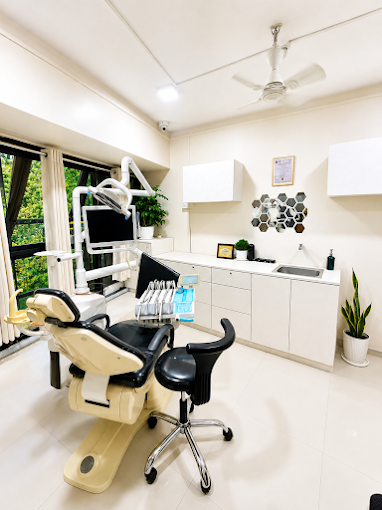

Root Canal Treatment
Treatment for teeth where the dental pulp is inflamed or infected, based on clinical assessment.
Ask about RCTDental care in Wakad–Hinjawadi
From routine check-ups and cleaning to root canal treatment, implants, crowns, braces and aligners, Newlife Dental Clinic provides personalised dental care for patients across Wakad, Hinjawadi and nearby Pune areas.

About the clinic
We believe patients should understand their dental condition and available treatment options before making a decision. Our approach focuses on clear communication, hygiene, comfort and treatment planning based on individual needs.
Newlife Dental Clinic serves patients from Wakad, Hinjawadi, Tathawade, Thergaon, Punawale, Pimple Saudagar and surrounding areas of Pune.

Treatments
Treatment for teeth where the dental pulp is inflamed or infected, based on clinical assessment.
Ask about RCTConsultation and treatment planning for replacement of missing teeth where implant treatment is appropriate.
Discuss implantsAssessment of teeth and bite to discuss suitable orthodontic treatment options.
Book consultationProfessional cleaning and preventive dental care tailored to your oral-health needs.
Book cleaningRestorative options used to protect or replace teeth depending on individual clinical requirements.
Learn moreProfessional guidance on whitening options and suitability for your teeth.
Ask about whiteningDental health guides
Practical dental information to help patients understand common treatments and make informed decisions before their consultation.
Understand common symptoms, how root canal treatment works, and what patients can expect during evaluation and treatment.
Read the guide →Learn when professional dental cleaning may be recommended and why routine preventive care matters for teeth and gums.
Read the guide →A patient-friendly overview of dental implants, suitability, assessment and considerations when replacing a missing tooth.
Read the guide →Compare braces and clear aligners and understand why the right option depends on your teeth, bite and treatment needs.
Read the guide →
Why patients visit us
Whether you are experiencing tooth pain, considering replacement of a missing tooth, exploring teeth straightening, or simply need a dental check-up, the first step is an appropriate clinical examination.
We focus on explaining findings and available options so that treatment decisions can be made with a clear understanding of your individual dental needs.
Schedule a ConsultationPatient experience
We value genuine patient feedback. Visit our Google Business Profile to view current patient reviews and clinic information.
Frequently asked questions
Newlife Dental Clinic is located in the Wakad–Hinjawadi area of Pune and serves patients from nearby neighbourhoods including Tathawade, Thergaon, Punawale and Pimple Saudagar.
The appropriate interval depends on your oral health and individual risk factors. A dentist can recommend a suitable review schedule after examining your teeth and gums.
No. Tooth pain can have different causes. A dental examination is required to identify the cause and determine whether root canal treatment or another approach is appropriate.
Not necessarily. Suitability depends on factors such as oral health, available bone, medical history and individual treatment requirements. A clinical assessment is needed.
The appropriate option depends on your teeth, bite and treatment needs. An orthodontic assessment can help determine which options may be suitable.
Appointments
Tell us what you would like help with and use the appointment form to start a WhatsApp enquiry with the clinic.
Newlife Dental Clinic
Wakad–Hinjawadi, Pune, Maharashtra